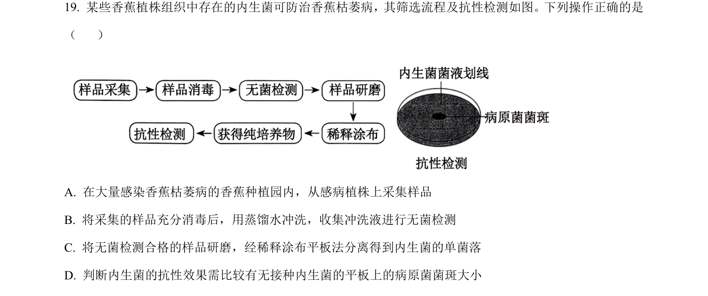
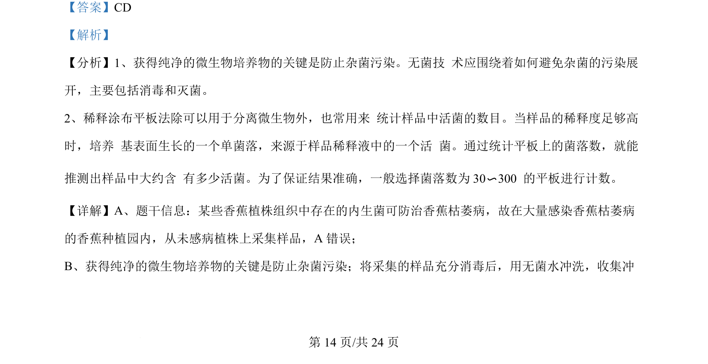
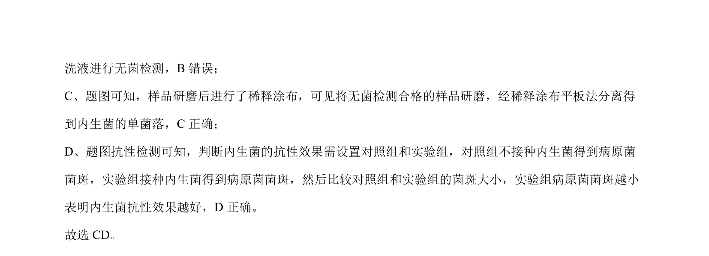

考点：微生物分离 无菌技术 稀释涂布平板法

内生菌分离筛选流程及抗性检测的操作判断


📄 原 PDF 第 14 页：
素材/真题/吉林/2008-2024·（吉林）生物高考真题/2024年高考生物试卷（辽宁）（解析卷）.pdf
【答案】CD 【解析】 【分析】1、获得纯净的微生物培养物的关键是防止杂菌污染。无菌技 术应围绕着如何避免杂菌的污染展 开，主要包括消毒和灭菌。 2、稀释涂布平板法除可以用于分离微生物外，也常用来 统计样品中活菌的数目。当样品的稀释度足够高 时，培养 基表面生长的一个单菌落，来源于样品稀释液中的一个活 菌。通过统计平板上的菌落数，就能 推测出样品中大约含 有多少活菌。为了保证结果准确，一般选择菌落数为 30〜300 的平板进行计数。 【详解】A、题干信息：某些香蕉植株组织中存在的内生菌可防治香蕉枯萎病，故在大量感染香蕉枯萎病 的香蕉种植园内，从未感病植株上采集样品，A 错误； B、获得纯净的微生物培养物的关键是防止杂菌污染；将采集的样品充分消毒后，用无菌水冲洗，收集冲